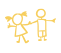

ベビーシッターサービスComo en Sitter
(コモエンシッター)
新しい形のベビーシッターサービスを開始しました。
保育園（コモエンカサ）で働く現役の優しい先生たちが
訪問保育致します。
保育園で、先生やお友達たちと一緒に遊び、
先生と慣れてから、ご自宅での保育を可能にしました。
お子さま、保護者様と保育士がゆっくりと面談して頂き
保育についてきめ細かいお話をしながらシッターサービスをご利用することができます。
急な仕事や用事の際に、自宅で子供を見て欲しい
保育園や幼稚園、または塾等への送迎に
風邪や感染症にかかってしまった時に
出産が近いので自宅で手伝って欲しい
夜間に利用したい（宿泊も可能）
通院・入院中の付き添いに
結婚式場や旅行先などの出掛け先で見て欲しい
保育園の後、ご自宅へ一緒に帰宅し保育
様々なシーンでご家族の養育方針にそって
お世話させて頂きます。
 サービスの特徴
あらゆる場面で、現役の保育園で勤務している保育士や先生がご要望にお応えします。
- 保育園・学校・習い事の送迎に
- 多彩な保育士がご自宅へ（勉強、英語、体操、絵画など）
- 受験指導（幼稚園・小学校受験のフォロー）
- 新生児ケア
- 産後ケア（助産師がお子様とお母様のケアもします）
- 病児ケア（看護師によるご自宅での病時・病後時保育）
- 育児パートナー（様々な子育てのお悩みにきめ細かくお応えします）
- ご家族を支援する多彩なオプションメニュー（海外旅行の同行など）
24時間365日ご予約を承ります。当日オーダーも可能です。
料金表
- 入会金：50,000円
- 年会費：10,000円
- 通常料金 (9:00~18:00)：2,500円/1時間(2時間より)
※キッズクラブカードをご購入の場合、お安くご利用を頂くことが可能です。
キッズクラブカード料金 Aカード：35,200円（16時間分） Bカード：64,000円（32時間分） - 初回利用登録料：1,500円
- 早朝・夜間料金 (9:00~18:00以外) ：500円増/1時間
- 土日祝日追加料金： 500円増/1時間
- 交通費： 実費負担
※利用時には、毎回保険料1,000円を別途頂戴致します。
- キャンセルチャージ 前々日(18:00まで) : オーダー料金の25%
- キャンセルチャージ 前日(前日18:00まで) : オーダー料金の50%
- キャンセルチャージ 当日(前日18:00以降) : オーダー料金の100%
- 土日ご予約の場合
金曜日18:00まで : オーダー料金の50%
金曜日18:00以降 : オーダー料金の100%
キャンセルチャージ
※お迎えが遅れる場合：20分まで850円、20分以降は1時間料金を頂くことをご了承下さい。
オプション料金
- 宿泊料金 (基本時間：21:00~9:00) : 36、000円/1泊
- 旅行同行 (交通費・食費・宿泊費別 : 応相談
- 沐浴 : 500円
- 食事のお世話 : 500円
- 体操指導 （お受験体操可） : 5,000円増/1時間
- 看護師訪問(病児保育対応可) : 1,500円増/1時間
- 助産師（産後ケア、病児保育、新生児対応可） : 2,000円増/1時間